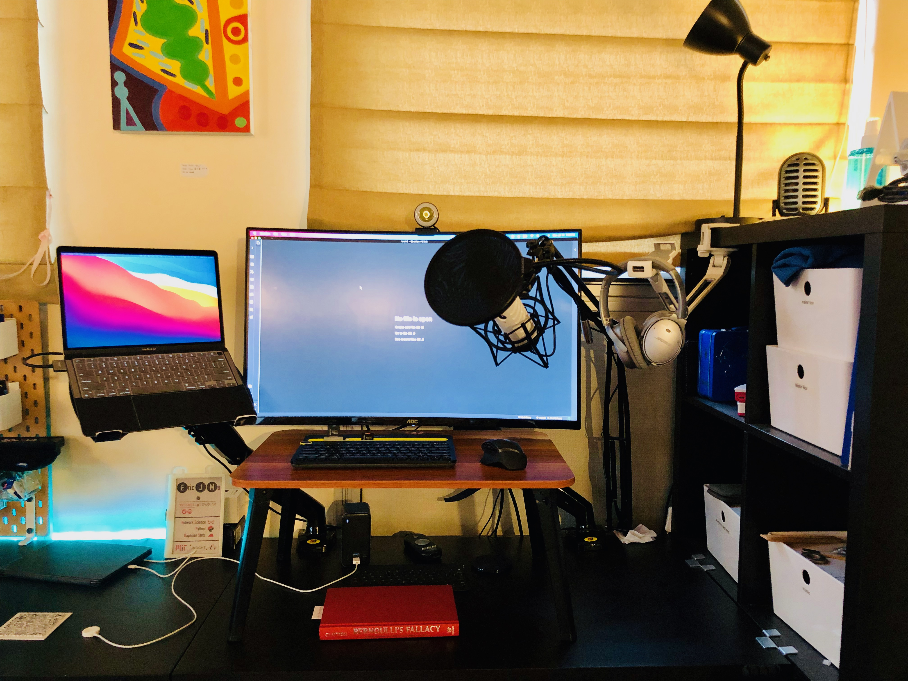

written by Eric J. Ma on 2021-06-04 | tags: reflections conferences pycon
This year I participated in PyCon US 2021. It's my 7th PyCon running, and I'm thankful to have been able to attend one every year since 2017.
For the past year and a half, we've been on lock-down, though. This means we have had to do conferences online instead.
In this blog post, I wanted to simply document what my setup and process for doing these recordings was like, in addition to writing down why I made particular choices.
My recording setup can be broken down into the hardware and software setup.
Let's first talk about the hardware setup.
To record videos, I used a 1080p webcam that I bought off Amazon. Back then, because supplies were low, I paid a premium of around USD80 to get one of the lesser-known brands; brand-name Logitech would have cost close to USD200. Nowadays, though, these webcams are available at a much lower price, about USD40 instead.
For audio, I splurged and bought myself a RODE podcaster USB mic. Every condenser microphone that I had tried recorded way too much background noise. With the red line rolling in the background from time to time, it'd be too distracting in the recorded videos. Hence, I opted for a dynamic microphone. Of them, the RODE Podcaster USB mic seemed to be at the sweet spot for being relatively affordable at about USD200+. This included the boom arm and shock mount while still having a good enough quality for recordings. As we all know, the most crucial element in videos is actually the audio, and I wanted to make sure this was done right.
When doing presentations, I have a preference for standing over sitting. This is because I was trained to give presentations while standing, so I'm used to it, and standing gives me this sense of formality that keeps me grounded when I'm doing these talks.
So in support of standing while presenting, I have three pieces of hardware that help.
The first is the monitor desk arms by North Bayou. They keep my monitor and laptop in an elevated position and are at about the right height. The second is the folding laptop desk. It just so happens to be of the correct height such that when I stand, my hands land comfortably on the keyboard and mouse. I also have a microphone boom arm, which allows me to keep the microphone at a comfortable height. With a pop filter, plosives become minimized. I tried it out at a PyMC Labs weekly meeting, and everyone could hear the difference.
Connecting the entire hardware setup is the Tobenone USB 13-port docking station. It provides power to the laptop, HDMI connectivity to the floating monitor, and USB-A connectivity for the webcam and microphone. Both my keyboards are Bluetooth (the big one is Logitech's K480, which allows simultaneous connectivity to three devices).
Here's a photo of the setup!

When recording, I set up the Open Broadcaster Software (OBS) with a scene that has:
The video capture takes in video from my webcam; the screen capture is recording the main presentation window; the audio capture records audio from the RODE microphone.
I've taken a particular liking to web technologies. Hence, I typically make my slides using a combination of hand-crafted, raw HTML backed by reveal.js. I like HTML slides because I can then host the slides on GitHub Pages without manually compiling them from another source, such as Keynote. Additionally, I can have complete control over the presentation.
Now, one may suggest that writing Markdown followed by calling on any one of the available markdown-to-reveal converters would make authoring the slides a bit easier. I agree, especially when all I need is to quickly bang out a set of slides! That said, I sometimes also want to have fine-grained control over particular transitions. Sometimes wish to embed custom JavaScript inside the slides. And at other times, I'd like to do highly custom HTML layouts, such as two cards on the left-to-right. Of course, to do this, I'd end up writing HTML and JavaScript anyway, so I figure I might as well write the entire slide deck in hand-crafted HTML anyways.
Committing the slides to GitHub also gives me GitHub pages. That means I can distribute a URL to my audience. They can flip through on their own terms if they choose to go on their own pace; no need to be constrained by my own pace.
I use Ulysses (and, nowadays, Obsidian if I happen to be working there) to draft my script. The ability to focus on just the text and nothing else helps a lot.
Because I have a two-monitor setup (laptop native and the external monitor), my OBS setup will capture the window on the laptop. My external monitor, where I have my webcam mounted, is also where I set up a makeshift. There, I use Ulysses (or Obsidian) with a window size just wide enough to manually scroll through the text as I click down the slides. It took me a bit of finessing around to get the arrangement right. Still, the general idea is to have the window focus on the presentation but mouse cursor on my script. That is my poor man's teleprompting setup.
Much as I love open source software, my most recent training was on LumaFusion on the iPad, and as such, I have stuck with it on my Mac as well.
Like Ramon, I also sometimes stumble on my words while recording. I also sometimes veer off course and improvise. And just like Ramon's experience, I have learned to accept that some stumbling and pausing make for a much more humanizing and natural video recording.
Getting to this point did take a bit of time and practice. It was vital for me to have a few conferences to get into the groove of recording things. Nowadays, recording a video feels much more natural and less awkward. I think I might start doing it a bit more often and not just for conferences.